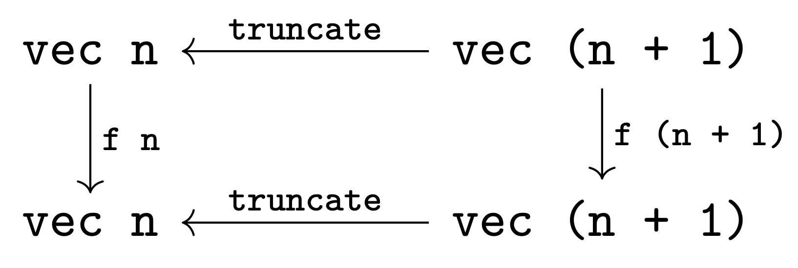

Consider the set \(2^\omega\) of infinite lists of natural numbers. What are the "nice" functions \(2^\omega \to 2^\omega\)? As indicated by the quotes, the answer to this question is highly dependent on your aesthetic preferences. Naturally, different people with different needs have proposed different answers based on a wide variety of values of "nice".
One potential value of "nice" is the vacuous one: all (mathematically definable) functions \(2^\omega \to 2^\omega\) are allowed! Among these are functions that aren't even definable as functions in your favorite programming language, such as the function \(f : 2^\omega \to 2^\omega\) defined by \(f(1^\omega) = 0^\omega\) and \(f(s) = s\): the function which is the identity everywhere, except for on the stream of all ones, where it's the stream of all zeroes. This function is clearly not computable in any sense: in order to determine even the first element of the output stream, all infinitely-many elements of the input need to be inspected.
Restricting "nice" to mean "computable" restricts the class significantly. Indeed, the main result is the rule out functions like the one above. A classic result in computability theory is that the computable functions \(f : 2^\omega \to 2^\omega\) are continous in a particular sense [1] which means that any finite prefix of the output of \(f\) can only depend on a finite prefix of its input.
However, the computable functions can include some unwanted behavior. Of particular interest for the purposes of this piece is functions that "go back on their word". A simple example of this is the function defined by the equations \(f(00s) = 01s\), \(f(01s) = 10s\), \(f(1s) = 1s\). To see why this might be undesierable, consider a situation where the input list to the function is being streamed in, bit by bit, from some outside source. Similarly, suppose the output is being produced bit by bit, and is fed to some similar transformation down the line. Unfortunately, the function \(f\) cannot be implemented in this manner: if the first bit of input is a \(0\), the implementation must wait until the second bit arrives to emit the first bit of output. To faithfully implement this in such a "stream transformer" machine model, the machine would need the ability to either (a) block until the second bit arrives, or (b) emit a dummy value for the first output and then "retract" it once it got the second bit of input.
Our goal in this document is to characterize the stream functions \(f : 2^\omega \to 2^\omega\) which can be implemented as stream processing machines which are both (a) "productive", in the sense that they always emit an output for each input, and (b) are "truthful" in the sense that they never have to go back on their word.
To begin, let's define a cobinductive [2]. type of streams, with elements drawn from a type A.
This type is generated by one constructor, SCons, which means that every stream s is equal to
SCons x s', where x is an element of type A (the "head" of the stream), and s' is another stream.
The circularity of this definition combined with the lack of a SNil constructor means that all
values of type stream A are infinite.
CoInductive stream (A : Type) : Type :=
| SCons : A -> stream A -> stream A.More or less by definition, the functions stream A -> stream B which can be written in Coq
are computable. Unfortunately, we must work a bit harder to get the other properties.
Intuitively, both the truthfulness and productivity properties are facts about prefixes of streams.
Truthfulness says that passing a larger prefix yields only a larger output, while productivity says
precisely by how much the output should grow. Of course, while this makes intuitive sense, it's not
immediately clear how to define these properties formally. After all, stream functions f : stream A -> stream B
are defined on entire streams, not prefixes!
The insight required to guide us past this quandry is that truthful, productive functions on prefixes of streams should actually be defined in terms of functions on their prefixes. To investigate this idea further, let's introduce a type of prefixes.
Inductive vec (A : Type) : nat -> Type :=
| Empty : vec A 0
| Snoc {n} : vec A n -> A -> vec A (S n).Above is a definition of length-indexed vectors, represented as snoc-lists. These will represent prefixes of streams.
The most important (for our purposes) operation on vectors is truncation: deleting the last element. Because we've implemented vectors as length-indexed snoc lists, truncate is trivial to implment, as shown below.
Definition truncate {A} {n : nat} (l : vec A (S n)) : vec A n :=
match l in vec _ (S n) return vec A n with
| Snoc _ l _ => l
end.We will also need the two "standard" list functions tail and cons, as well as some theorems relating them to Snoc and truncate.
Rather than take time to explain these later, we will simply introduce them here.
Fixpoint cons {A} {n : nat} (x : A) (l : vec A n) : vec A (S n) := match l in vec _ n return vec _ (S n) with | Empty _ => Snoc _ (Empty _) x | Snoc _ l' y => Snoc _ (cons x l') y end.A: Type
n: nat
l: vec A (S n)vec A nA: Type
l: vec A 1vec A 0A: Type
n: nat
l: vec A (S (S n))
IHn: vec A (S n) -> vec A nvec A (S n)exact (Empty A).A: Type
l: vec A 1vec A 0A: Type
n: nat
l: vec A (S (S n))
IHn: vec A (S n) -> vec A nvec A (S n)A: Type
n: nat
l: vec A (S (S n))
IHn: vec A (S n) -> vec A n
n0: nat
X: vec A (S n)
X0: A
H0: n0 = S nvec A (S n)A: Type
n: nat
l: vec A (S (S n))
IHn: vec A (S n) -> vec A n
n0: nat
X: vec A (S n)
X0: A
H0: n0 = S nvec A nexact X. Defined. Require Import Coq.Program.Basics. Require Import Coq.Program.Equality.A: Type
n: nat
l: vec A (S (S n))
IHn: vec A (S n) -> vec A n
n0: nat
X: vec A (S n)
X0: A
H0: n0 = S nvec A (S n)A: Typeforall (n : nat) (l : vec A n) (x y : A), cons x (Snoc A l y) = Snoc A (cons x l) yA: Typeforall (n : nat) (l : vec A n) (x y : A), cons x (Snoc A l y) = Snoc A (cons x l) yA: Type
n: nat
l: vec A nforall x y : A, cons x (Snoc A l y) = Snoc A (cons x l) yA: Typeforall x y : A, cons x (Snoc A (Empty A) y) = Snoc A (cons x (Empty A)) yA: Type
n: nat
l: vec A n
a: Aforall x y : A, cons x (Snoc A (Snoc A l a) y) = Snoc A (cons x (Snoc A l a)) yA: Typeforall x y : A, cons x (Snoc A (Empty A) y) = Snoc A (cons x (Empty A)) yreflexivity.A: Typeforall x y : A, Snoc A (Snoc A (Empty A) x) y = Snoc A (Snoc A (Empty A) x) yA: Type
n: nat
l: vec A n
a: Aforall x y : A, cons x (Snoc A (Snoc A l a) y) = Snoc A (cons x (Snoc A l a)) yA: Type
n: nat
l: vec A n
a, x, y: Acons x (Snoc A (Snoc A l a) y) = Snoc A (cons x (Snoc A l a)) yreflexivity. Qed.A: Type
n: nat
l: vec A n
a, x, y: ASnoc A (Snoc A (cons x l) a) y = Snoc A (Snoc A (cons x l) a) yA: Typeforall (n : nat) (l : vec A (S n)) (x : A), truncate (cons x l) = cons x (truncate l)A: Typeforall (n : nat) (l : vec A (S n)) (x : A), truncate (cons x l) = cons x (truncate l)A: Type
n: nat
l: vec A (S n)forall x : A, truncate (cons x l) = cons x (truncate l)A: Type
n: nat
l: vec A n
a: A
IHl: forall (n0 : nat) (l0 : vec A (S n0)), n = S n0 -> l ~= l0 -> forall x : A, truncate (cons x l0) = cons x (truncate l0)forall x : A, truncate (cons x (Snoc A l a)) = cons x (truncate (Snoc A l a))A: Type
n: nat
l: vec A n
a: A
IHl: forall (n0 : nat) (l0 : vec A (S n0)), n = S n0 -> l ~= l0 -> forall x : A, truncate (cons x l0) = cons x (truncate l0)forall x : A, truncate (cons x (Snoc A l a)) = cons x (truncate (Snoc A l a))A: Type
n: nat
l: vec A n
a: A
IHl: forall (n0 : nat) (l0 : vec A (S n0)), n = S n0 -> l ~= l0 -> forall x : A, truncate (cons x l0) = cons x (truncate l0)
x: Atruncate (cons x (Snoc A l a)) = cons x (truncate (Snoc A l a))A: Type
n: nat
l: vec A n
a: A
IHl: forall (n0 : nat) (l0 : vec A (S n0)), n = S n0 -> l ~= l0 -> forall x : A, truncate (cons x l0) = cons x (truncate l0)
x: Atruncate (Snoc A (cons x l) a) = cons x (truncate (Snoc A l a))reflexivity. Qed.A: Type
n: nat
l: vec A n
a: A
IHl: forall (n0 : nat) (l0 : vec A (S n0)), n = S n0 -> l ~= l0 -> forall x : A, truncate (cons x l0) = cons x (truncate l0)
x: Acons x l = cons x lAdmitted.A: Typeforall (n : nat) (l : vec A (S n)) (x : A), tail (Snoc A l x) = Snoc A (tail l) xA: Typeforall (n : nat) (l : vec A (S (S n))), truncate (tail l) = tail (truncate l)A: Type
n: nat
l: vec A (S (S n))truncate (tail l) = tail (truncate l)A: Type
n: nat
l: vec A (S n)
a: A
IHl: forall (n0 : nat) (l0 : vec A (S (S n0))), S n = S (S n0) -> l ~= l0 -> truncate (tail l0) = tail (truncate l0)truncate (tail (Snoc A l a)) = tail (truncate (Snoc A l a))A: Type
n: nat
l: vec A n
a, a0: A
IHl: forall (n0 : nat) (l0 : vec A (S (S n0))), S n = S (S n0) -> Snoc A l a ~= l0 -> truncate (tail l0) = tail (truncate l0)truncate (tail (Snoc A (Snoc A l a) a0)) = tail (truncate (Snoc A (Snoc A l a) a0))Admitted.A: Type
n: nat
l: vec A n
a, a0: A
IHl: forall (n0 : nat) (l0 : vec A (S (S n0))), S n = S (S n0) -> Snoc A l a ~= l0 -> truncate (tail l0) = tail (truncate l0)nat_rect (fun n : nat => vec A (S n) -> vec A n) (fun _ : vec A 1 => Empty A) (fun (n : nat) (IHn : vec A (S n) -> vec A n) (l : vec A (S (S n))) => match l in (vec _ n0) return (n0 = S (S n) -> vec A (S n)) with | Empty _ => fun H : 0 = S (S n) => False_rect (vec A (S n)) (eq_ind 0 (fun e : nat => match e with | 0 => True | S _ => False end) I (S (S n)) H) | @Snoc _ n0 x x0 => fun H : S n0 = S (S n) => eq_rect_r (fun n1 : nat => vec A n1 -> A -> vec A (S n)) (fun (X : vec A (S n)) (X0 : A) => Snoc A (IHn X) X0) (f_equal (fun e : nat => match e with | 0 => n0 | S n1 => n1 end) H) x x0 end eq_refl) n (Snoc A l a) = tail (Snoc A l a)
Truncation is particularly interesting because it lets us reframe streams in terms of their prefixes.
A stream can be thought of as a family of vectors vs : forall n, vec n, one of each length,
such that the \(n+1\) st is just the \(n\) th with one element tacked on to the end.
Swapping the perspective around, this is to say that that vs n = truncate (vs (n + 1)).
Intuitively, this view of streams is consistent with their view as coinductively defined objects:
they are lists that we may unfold to any finite depth.
Viewing streams this way leads us to our first definition of productive & truthful functions on streams!
Record causal (A : Type) (B : Type) : Type := mkCausal {
f : forall n, vec A n -> vec B n;
caused : forall n l, f n (truncate l) = truncate (f (S n) l)
}.For historical reasons, these objects are called "causal functions", which consist of

- A family of maps
f n : vec A n -> vec B ntakingA-vectors of lengthntoB-vectors of lengthn. For a causal functioncand some natm, we will callf c mthem-th component ofc. The typing of these components ensures the "one-at-a-time" productivity of this family, viewed as a stream function. Vectors of length 1 yield vectors of length 1, and adding one more element to the input yields exactly one more element of output. But nothing in the type ensures that the first elmement remained the same. That's the job of the second component of the record, which consists of...- Proofs that the family
f"commutes with truncation", as shown in the commutative diagram below. Intuitively,f n (truncate l) = truncate (f (S n) l)says thatf nandf (S n)must agree on the firstnelements of their input: only the final element off (S n)can be "new".
Gluing all of these squares together, the data of a causal function is contained in the
following diagram: a pair of infinitely descending chains, connected pointwise
by the components of f.
To the observer trained in the arts of category theory, this may spark some recognition:
vec is "just" an \(\omega\)-presheaf, and causal functions are "just" presheaf morphisms.
Now with our definition of causal functionns in hand, it's time to interpret causal functions as stream functions, i.e. turn a causal map that operates on finite prefixes of a stream into one that transforms whole streams.
To begin, we note that causal maps naturally act as functions A -> B by considering the f 1 : vec 1 -> vec 1 component as a map on
singleton lists.
Admitted.A, B: Type
c: causal A B
x: AB
This should allow us to lift a causal function from A to B to a function from streams of A-s
to streams of B-s.
Intuitively, the process is straightforward. Given a causal function c,
we will define its interpreation as a stream map interpCausal c : stream A -> stream B as the
function which takes a stream SCons x s, and returns the stream SCons y s',
where y is the result of using c as a function A -> B and passing x, and s' is the
result of the recursive call.
This intuitive idea is translated into code below.
CoFixpoint interpCausalWrong {A B} (c : causal A B) (s : stream A) : stream B :=
match s with
| SCons _ x s => let y := causalApply1 c x in
SCons _ y (interpCausalWrong c s)
end.Unfortunately, as the identifier suggests, this is wrong in an important way.
To understand why, consider the stream SCons x (SCons y s). The function interpCausalWrong
sends this to SCons x' (SCons y' s'), with x' = causalApply1 c x and y' = causalApply1 c y.
Unfolding the definition of causalApply1, this means that x' and y' are both the result of
applying the first component of c.
However, we would expect the first two bits of the output be the results of applying the
2nd component of c to the length-2 vector Snoc (Snoc x Empty) y.
To fix this, we must shift our perspective. If we've processed n elements of the stream so far,
We produce the n+1-st output by Snoc-ing the n+1-st input onto the prior n,
applying the n+1-st component of c, and then taking the tail.
This process is encoded by the function causalApplySnoc below.
Definition causalApplySnoc {A B} {n : nat} (c : causal A B) (l : vec A n) (x : A) : B :=
match f _ _ c (S n) (Snoc _ l x) in vec _ (S n) return B with
| Snoc _ _ y => y
end.We can now write interpCausal by simply accumulating elements as we see them, and kicking the
whole process off with the empty stream.
CoFixpoint interpCausalAux {A B} {n : nat} (c : causal A B) (l : vec A n) (s : stream A) : stream B := match s with | SCons _ x s => let y := causalApplySnoc c l x in SCons _ y (interpCausalAux c (Snoc _ l x) s) end. Definition interpCausal {A B} (c : causal A B) : stream A -> stream B := fun s => interpCausalAux c (Empty _) s.
To our initual query of "which are the nice functions" stream -> stream,
interpCausal provides the answer: "those which arise as interpCausal c for some causal function c".
As it turns out, causal functions are just one formalism for capturing this class of stream maps!
Another is by way of transducers, which are best thought of as stateful functions of type A -> B.
More precisely, a transducer is a function that takes in an A, and produces both an output B, and a new transducer:
the new state. The coinductive definition below uses a single constructor T to encode this:
every transducer t : transd is of the form T f, where f : A -> B * transd is a function
from an input A to pair of an output B and a new transducer to take the place of the old one.
CoInductive transd (A : Type) (B : Type): Type :=
| T : (A -> B * transd A B) -> transd A B.Of course, nothing in the type discipline prevents us from using the same f multiple times
and ignoring the output transd, so we will just have to be careful about not accidentally reusing stale states.
Because stepping the transducer requires a pattern match, we wrap this behavior in a function step : transd A B -> A -> B * (transd A B),
defined below.
Definition step {A B} (t : transd A B) (x : A) : B * transd A B :=
match t with
| T _ _ f => f x
end.To get a sense of how transducers work, let's define a transducer which computes the partial sums of its input.
CoFixpoint partialSumAux (n : nat) : transd nat nat := T _ _ (fun x => let y := x + n in (y, partialSumAux y)). Definition partialSum : transd nat nat := partialSumAux 0.
This transducer accumulates a running total n of the values it's seen so far. When it gets
an input x, it outputs x + n, and transitions to a new state where the running total is x + n.
With an illustative example in hand, we can start to look at ways of interpreting
transducers. Unlike last time, the natural thing works!
A transducer t is interpreted as the function that, when given a stream SCons x s,
steps t on x, producing output y and a new transducer t', and returns the stream with y
cons'd to the front of interpreting t' on the rest of the stream.
CoFixpoint interpTransd {A B} (t : transd A B) : stream A -> stream B :=
fun s =>
match s with
| SCons _ x s => let (y,t') := step t x in
SCons _ y (interpTransd t' s)
end.The fact that stepping t returns a new transducer ready to handle the rest of the stream
means we don't have to do any auxiliary state-passing: it's all handled by the
definition of the particular t.
interpTransd provides yet another answer to the question of which functions stream A -> stream B are nice:
those which arise by interpTransd t for some transducer t!
As it happens, the two answers we have discussed thus far seem to actually be the same: transducers and causal functions define the same class of stream morphisms. The first step in showing this is to show that transducers and causal functions are inter-convertible: we can turn one into the other, and vice versa. Surprisingly, both directions are straightforward.
We begin by showing that transducers can be interpreted as causal functions. Given a
transducer t, the components of the corresponding causal function are the functions vec A n -> vec B n
which fold step t over the input vector from left to right, threading the updated state through.
This is implemented in the two functions below: stepN handles the threading of the transducer through,
and execN simply projects out the result.
Fixpoint stepN {A B} {n} (t : transd A B) (l : vec A n) : transd A B * vec B n := match l with | Empty _ => (t,Empty _) | Snoc _ l' x => let (t',l'') := stepN t l' in let (y,t'') := step t' x in (t'',Snoc _ l'' y) end. Definition execN {A B} (t : transd A B) : forall n, vec A n -> vec B n := fun n l => snd (stepN t l).
To turn this family of components defined by execN t into a causal map, we must also prove the
commuting squares which show that execN t commutes with truncation. Proving this will require
a sort of "eta law" for execN called execN_snoc. In short, this says that
the result of the n+1-st component of execN t is just that of the n-th, with one more step of t tacked on at the end.
A, B: Typeforall (t : transd A B) (n : nat) (l : vec A n) (x : A), execN t (S n) (Snoc A l x) = Snoc B (execN t n l) (let (t', _) := stepN t l in fst (step t' x))A, B: Typeforall (t : transd A B) (n : nat) (l : vec A n) (x : A), execN t (S n) (Snoc A l x) = Snoc B (execN t n l) (let (t', _) := stepN t l in fst (step t' x))A, B: Type
t: transd A B
n: nat
l: vec A n
x: AexecN t (S n) (Snoc A l x) = Snoc B (execN t n l) (let (t', _) := stepN t l in fst (step t' x))A, B: Type
t: transd A B
n: nat
l: vec A n
x: Asnd (stepN t (Snoc A l x)) = Snoc B (snd (stepN t l)) (let (t', _) := stepN t l in fst (step t' x))A, B: Type
t: transd A B
n: nat
l: vec A n
x: Asnd (let (t', l'') := stepN t l in let (y, t'') := step t' x in (t'', Snoc B l'' y)) = Snoc B (snd (stepN t l)) (let (t', _) := stepN t l in fst (step t' x))A, B: Type
t: transd A B
n: nat
l: vec A n
x: A
t0: transd A B
v: vec B nsnd (let (y, t'') := step t0 x in (t'', Snoc B v y)) = Snoc B (snd (t0, v)) (fst (step t0 x))A, B: Type
t: transd A B
n: nat
l: vec A n
x: A
t0: transd A B
v: vec B n
b: B
t1: transd A Bsnd (t1, Snoc B v b) = Snoc B (snd (t0, v)) (fst (b, t1))reflexivity. Qed.A, B: Type
t: transd A B
n: nat
l: vec A n
x: A
t0: transd A B
v: vec B n
b: B
t1: transd A BSnoc B v b = Snoc B v bA, B: Type
t: transd A Bforall (n : nat) (l : vec A (S n)), execN t n (truncate l) = truncate (execN t (S n) l)A, B: Type
t: transd A Bforall (n : nat) (l : vec A (S n)), execN t n (truncate l) = truncate (execN t (S n) l)A, B: Type
t: transd A B
n: nat
l: vec A (S n)execN t n (truncate l) = truncate (execN t (S n) l)
We begin by using the dependent destruction tactic, which uses the fact that l has length at least one to refine our goal to handling the case where l is actually Snoc l a.
t: transd A B
l: vec A n
a: AexecN t n (truncate (Snoc A l a)) = truncate (execN t (S n) (Snoc A l a))t: transd A B
l: vec A n
a: AexecN t n l = truncate (execN t (S n) (Snoc A l a))
We then apply the execN_snoc lemma to massage the execN t (S n) (Snoc _ l a) term into a form where we can directly reduce truncate.
t: transd A B
l: vec A n
a: AexecN t n l = truncate (Snoc B (execN t n l) (let (t', _) := stepN t l in fst (step t' a)))
Ignoring the cruft in the second component of the snoc, we note that the RHS is of the form truncate (Snoc _ (execN t l) _), which directly reduces by one use of cbn to execN t l, as required.
reflexivity. Qed.t: transd A B
l: vec A n
a: AexecN t n l = execN t n l
With components and proofs in hand, we can package them together to get a function transdToCausal : transd A B -> causal A B.
Definition transdToCausal {A B} (t : transd A B) : causal A B :=
mkCausal _ _ (execN t) (execN_caused t).Of course, we can also go backwards: causal maps define transducers. This translation works essentially
the same way as the interpretation of causal functions as stream maps: we accumulate the previously-seen values,
and apply the n+1-st component after n accumulated values to get the next.
CoFixpoint causalToTransdAux {A B} {n : nat} (c : causal A B) (l : vec A n) : transd A B := T _ _ (fun x => let y := causalApplySnoc c l x in (y, causalToTransdAux c (Snoc _ l x)) ). Definition causalToTransd {A B} (c : causal A B) : transd A B := causalToTransdAux c (Empty _).
Of course, these maps back and forth create natural proof obligations. In order to show that causal maps and transducers define the same set of stream functions, it remains to show the following:
- The
causalToTransdandtransdToCausalfunctions are (weakly) inverses, up to suitable equivalence relations oncausal A Bandtransd A B.- Equivalent causal functions and equivalent trandsucers are interpreted as equivalent stream functions: i.e. the functions
interpCausalandinterpTransdare congruences.
We define these equivalence relations and theorems below – I have yet to prove them.
CoInductive stream_eq {A} : stream A -> stream A -> Prop := | Eq_SCons : forall x s s', stream_eq s s' -> stream_eq (SCons _ x s) (SCons _ x s'). Definition causal_eq {A B} (c : causal A B) (c' : causal A B) := forall n l, f _ _ c n l = f _ _ c' n l. CoInductive transd_eq {A B} : transd A B -> transd A B -> Prop := | Eq_T : forall f f', (forall (x : A), (fst (f x)) = (fst (f' x)) /\ transd_eq (snd (f x)) (snd (f' x))) -> transd_eq (T _ _ f) (T _ _ f').A, B: Typeforall c : causal A B, causal_eq c (transdToCausal (causalToTransd c))Admitted.A, B: Typeforall c : causal A B, causal_eq c (transdToCausal (causalToTransd c))A, B: Typeforall t : transd A B, transd_eq t (causalToTransd (transdToCausal t))Admitted.A, B: Typeforall t : transd A B, transd_eq t (causalToTransd (transdToCausal t))A, B: Typeforall c c' : causal A B, causal_eq c c' -> forall s : stream A, stream_eq (interpCausal c s) (interpCausal c' s)Admitted.A, B: Typeforall c c' : causal A B, causal_eq c c' -> forall s : stream A, stream_eq (interpCausal c s) (interpCausal c' s)A, B: Typeforall t t' : transd A B, transd_eq t t' -> forall s : stream A, stream_eq (interpTransd t s) (interpTransd t' s)Admitted.A, B: Typeforall t t' : transd A B, transd_eq t t' -> forall s : stream A, stream_eq (interpTransd t s) (interpTransd t' s)
| [1] | For the curious: by endowing \(2\) with the discrete topology and \(2^\omega\) with the product topology, the computable functions \(2^\omega \to 2^\omega\) are continuous. |
| [2] | We will not be discussing coinduction or cofixpoints in this document, but the unfamiliar reader can safely ignore this detail, and treat the coinductive definitions as just special syntax for defining datatypes that have infinite values. |
This document was written as my final project in Prof. Andrew Head's course "Live and Literate Programming" in Fall 2022. After a semester of studying literate programing, this case study left me with a few take-aways and recommendations for future designers of literate programming tools for theorem provers like Coq.
cons and tail functions on snoc-lists, as well as the
compatability theorems like cons_snoc or truncate_cons. Unfortunately,
Alectryon requires that if the statements and type signatures of these theorems
and definitions are to be shown in the document, then their proofs and bodies
must also be shown. This is significant cruft that draws the reader away from
their real task understanding the imporant theorems and definitions.